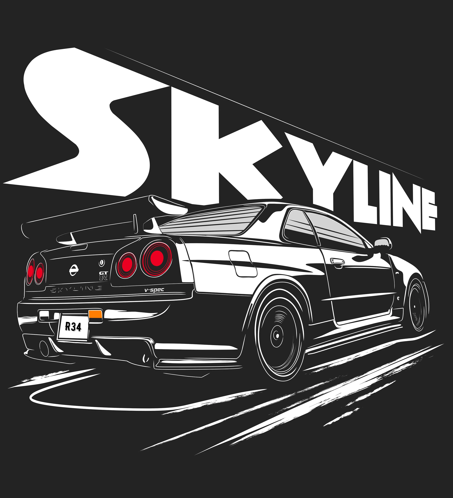

The Nissan Skyline R34 is a legendary Japanese sports car with a rich history. Here's some key information about the
Skyline R34:
- The Skyline R34 is renowned for its powerful RB26DETT engine and impressive handling, making it a favorite among car enthusiasts.
- It was first introduced in the late 1990s and gained fame for its performance on the racing circuit.
- The Skyline R34 is known for its iconic design, featuring sleek lines and distinctive quad taillights.
- Enthusiasts love the Skyline R34 for its versatility, whether on the street or the track.
- Its appearance in various racing games and movies has solidified its status as a JDM icon.
- Although production of the Skyline R34 ceased in the early 2000s, it remains a sought-after classic in the automotive world.